3. 组内对照（AI vs NoAI）
| Expert |
Score |
N_pairs |
Test |
Statistic |
P_value_raw |
Effect |
Effect_name |
Mean_Diff_AI_minus_NoAI |
CI95_L |
CI95_U |
SESOI |
CI_within_SESOI |
TOST_p_lower |
TOST_p_upper |
TOST_p |
TOST_equivalent |
Equivalence_Conclusion |
P_value_adj_Holm |
| E1 |
Process Score |
12 |
paired_t |
-1.393261 |
0.191054 |
-0.402200 |
Cohen_dz |
-0.500000 |
-1.289868 |
0.289868 |
0.5 |
False |
0.500000 |
0.008848 |
0.500000 |
False |
Not equivalent |
0.573163 |
| E1 |
Outcome Score |
12 |
wilcoxon |
3.000000 |
0.625000 |
-0.141098 |
r_rb_approx |
-0.250000 |
-0.833333 |
0.333333 |
0.3 |
False |
0.436303 |
0.049210 |
0.436303 |
False |
Not equivalent |
0.625000 |
| E1 |
Total Score |
12 |
paired_t |
-1.172604 |
0.265723 |
-0.338502 |
Cohen_dz |
-0.666667 |
-1.918004 |
0.584671 |
0.7 |
False |
0.477149 |
0.017497 |
0.477149 |
False |
Not equivalent |
0.573163 |
| E2 |
Process Score |
12 |
paired_t |
0.820652 |
0.429271 |
0.236902 |
Cohen_dz |
0.250000 |
-0.420499 |
0.920499 |
0.5 |
False |
0.015785 |
0.214635 |
0.214635 |
False |
Not equivalent |
0.858541 |
| E2 |
Outcome Score |
12 |
wilcoxon |
0.000000 |
0.250000 |
-0.332077 |
r_rb_approx |
-0.250000 |
-0.500000 |
0.000000 |
0.3 |
False |
0.354519 |
0.000727 |
0.354519 |
False |
Not equivalent |
0.750000 |
| E2 |
Total Score |
12 |
paired_t |
0.000000 |
1.000000 |
0.000000 |
Cohen_dz |
0.000000 |
-0.812768 |
0.812768 |
0.7 |
False |
0.042288 |
0.042288 |
0.042288 |
True |
Probably equivalent |
1.000000 |
3.1 配对连线图（每组从 NoAI 到 AI 的变化）
说明：每条线代表一个组，从 NoAI 指向 AI。可直观看到各组方向与幅度；若线条方向杂乱，说明不同组变化趋势不一致。
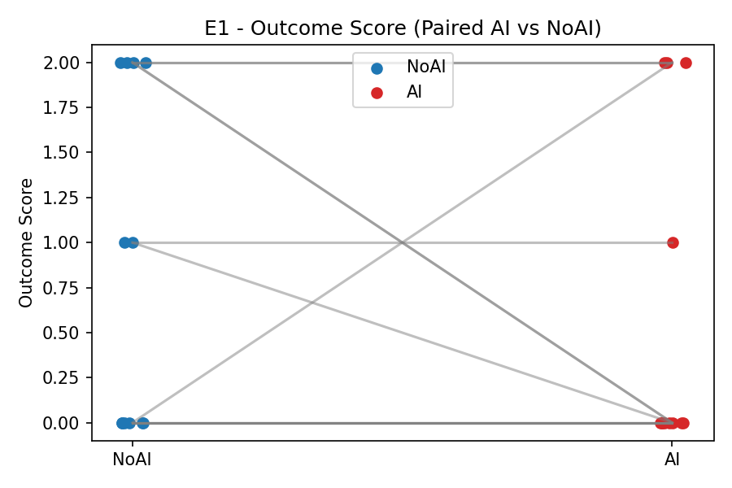
paired_lines_E1_Outcome_Score.png
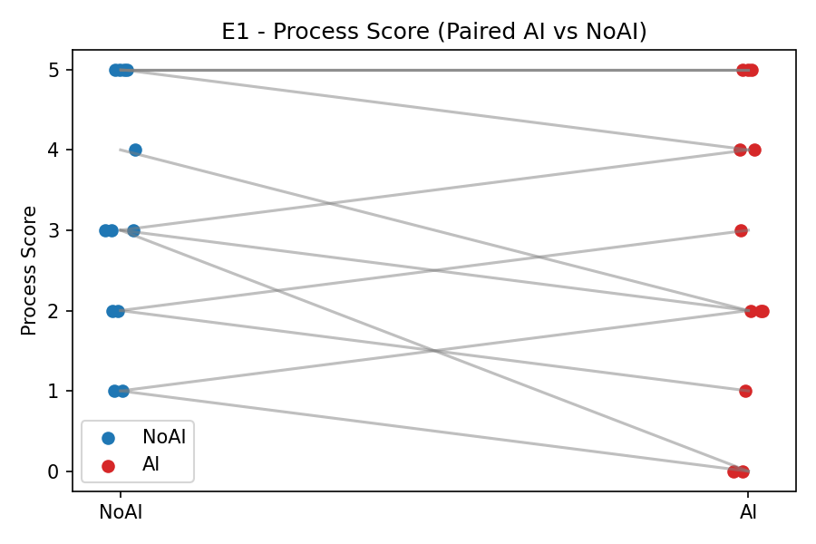
paired_lines_E1_Process_Score.png
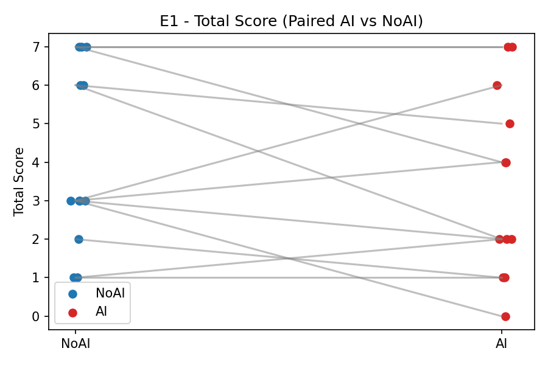
paired_lines_E1_Total_Score.png
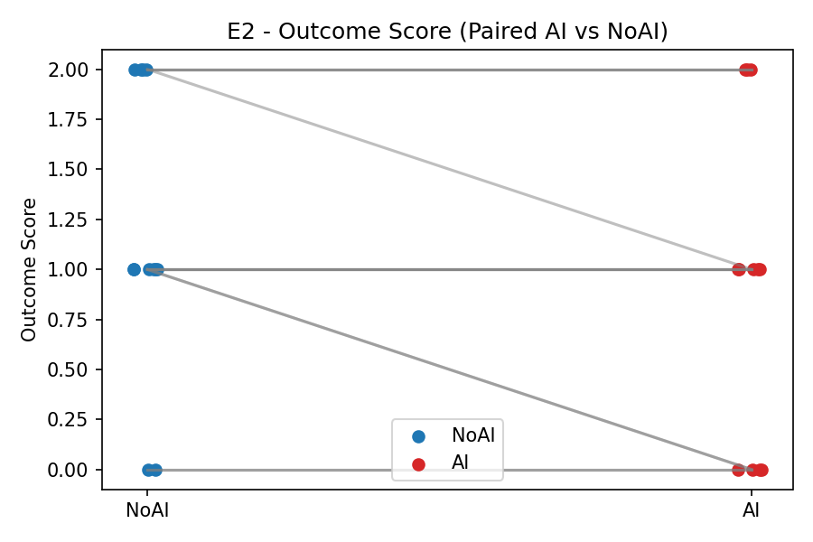
paired_lines_E2_Outcome_Score.png
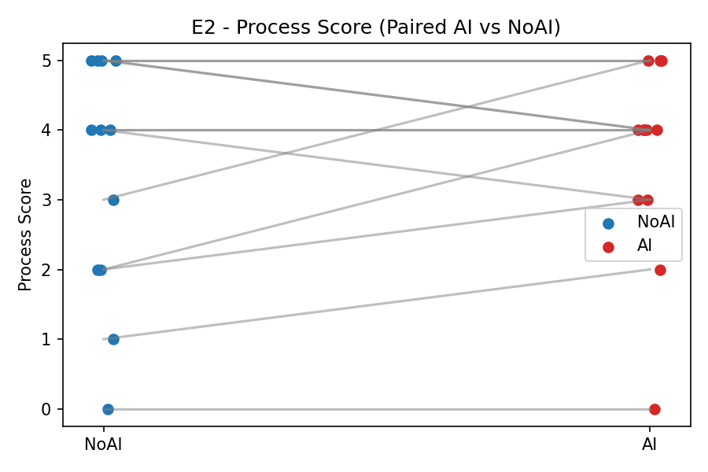
paired_lines_E2_Process_Score.png
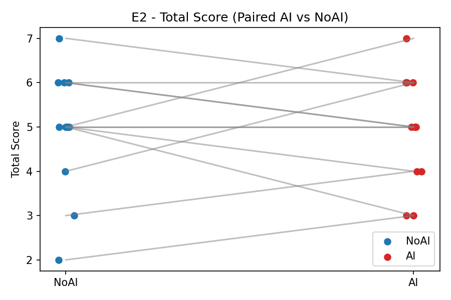
paired_lines_E2_Total_Score.png
3.2 差值柱状图（AI − NoAI）
说明：每根柱表示一个组的差值（AI−NoAI），上方红线为整体均值，虚线为95%CI。整体均值与零线的关系体现总体差异方向与大小。
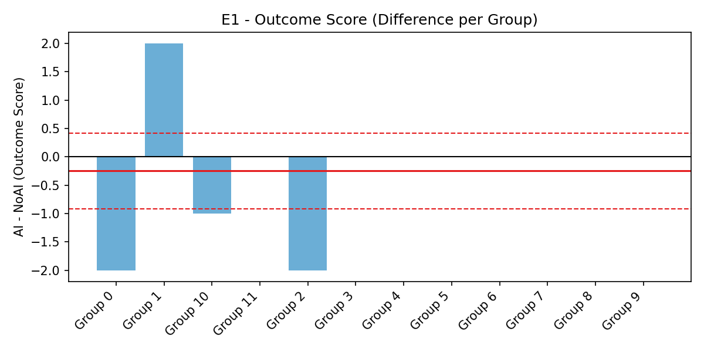
diff_bar_E1_Outcome_Score.png
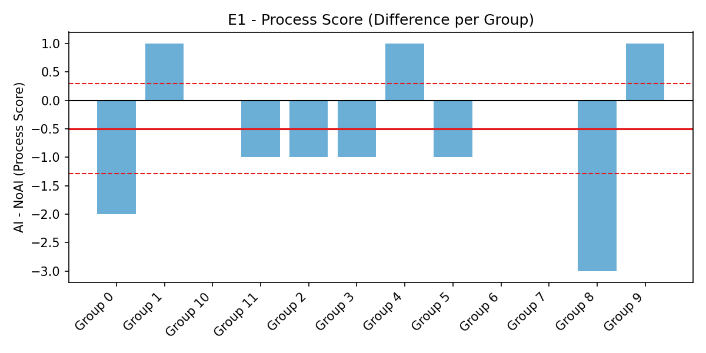
diff_bar_E1_Process_Score.png
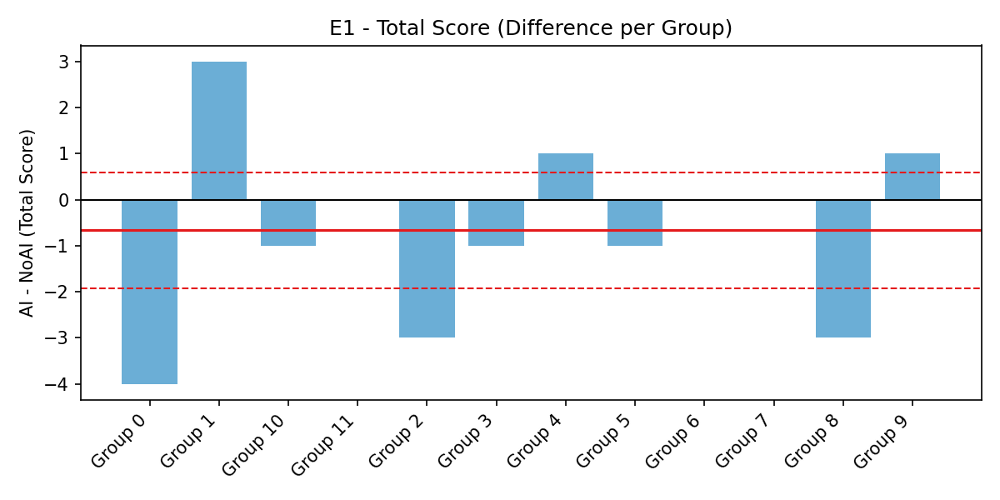
diff_bar_E1_Total_Score.png
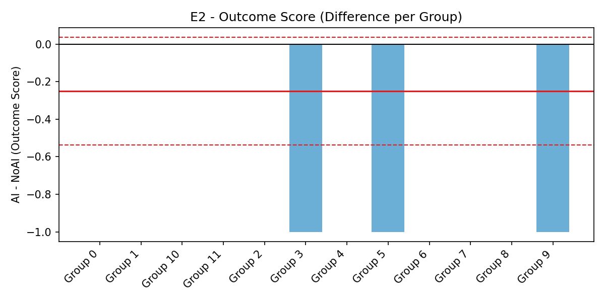
diff_bar_E2_Outcome_Score.png
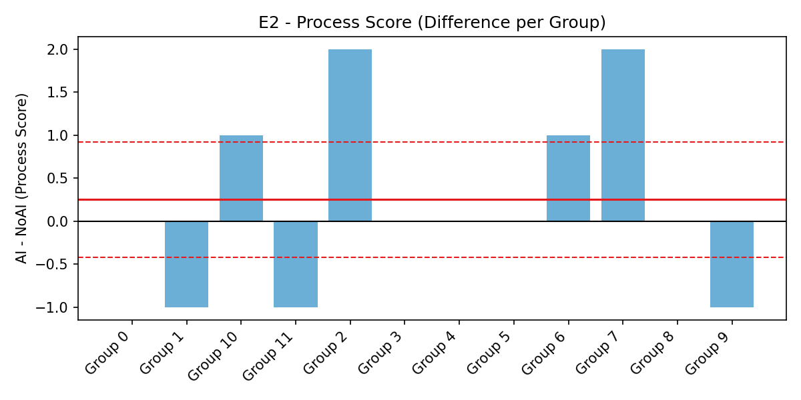
diff_bar_E2_Process_Score.png
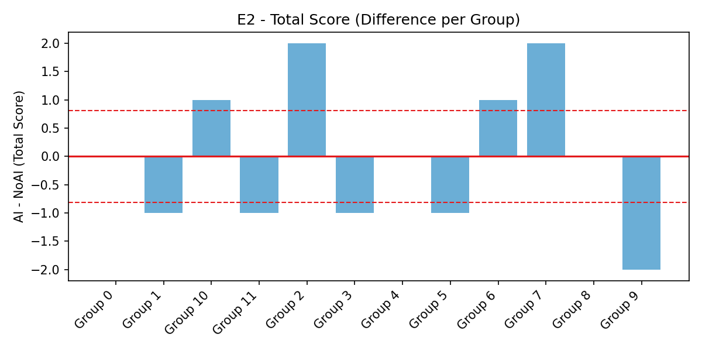
diff_bar_E2_Total_Score.png
3.3 差值箱线图（AI − NoAI 的分布）
说明：展示所有组的差值分布与离群点，红线为均值。与柱状图互为补充，有助于识别分布偏态与极端值。
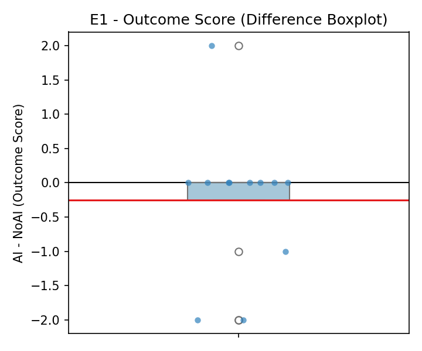
diff_box_E1_Outcome_Score.png
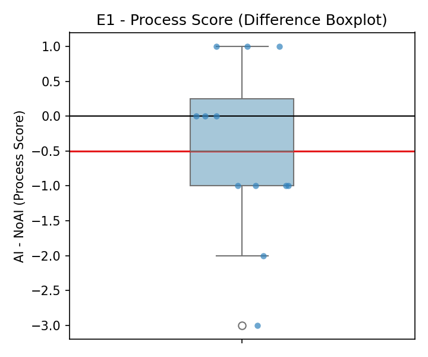
diff_box_E1_Process_Score.png
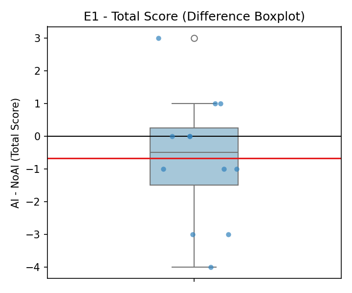
diff_box_E1_Total_Score.png
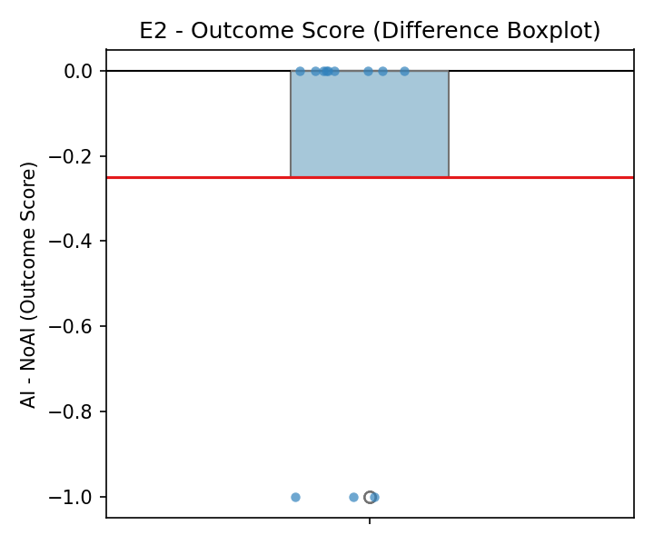
diff_box_E2_Outcome_Score.png
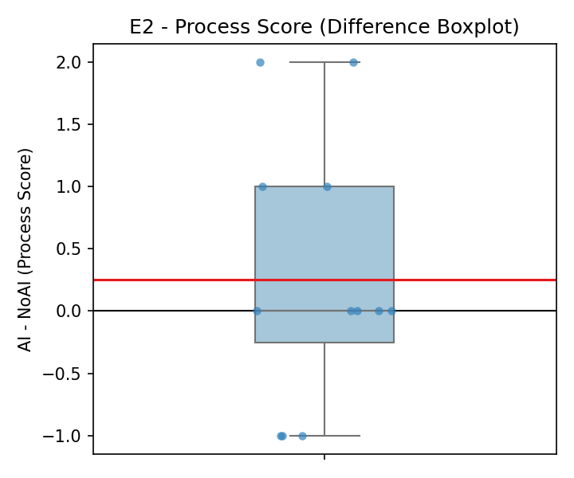
diff_box_E2_Process_Score.png
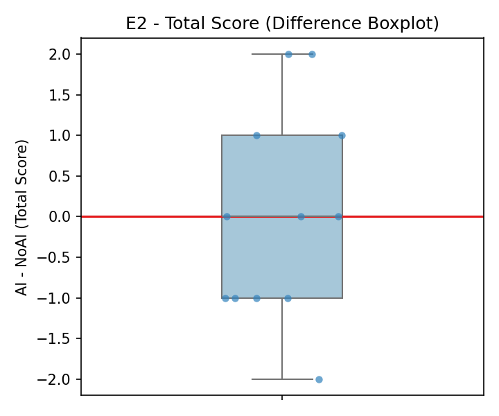
diff_box_E2_Total_Score.png